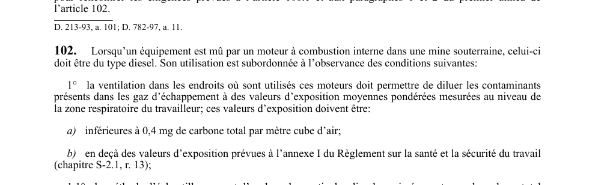

art-102-RSSM : conditions utilisation moteur diesel souterrain
Tout moteur à combustion interne sous terre doit être de type diesel. Cette obligation vise l'employeur.
- Et son utilisation est soumise à des conditions strictes : dilution des contaminants.
- Exposition carbone total < 0,4 mg/m³.
- Méthode NIOSH 5040 v.3 (15 mars 2003).
- Laboratoire accrédité ISO/CEI 17025:2005.
- Point d'éclair additif ≥ 37,8 °C (100 °F).
- Teneur soufre carburant < 0,05 %.
🌐 LegisQuébec · 📄 PDF officiel
Texte officiel
Lorsqu’un équipement est mû par un moteur à combustion interne dans une mine souterraine, celui-ci doit être du type diesel. Son utilisation est subordonnée à l’observance des conditions suivantes:
1° la ventilation dans les endroits où sont utilisés ces moteurs doit permettre de diluer les contaminants présents dans les gaz d’échappement à des valeurs d’exposition moyennes pondérées mesurées au niveau de la zone respiratoire du travailleur; ces valeurs d’exposition doivent être:
a) inférieures à 0,4 mg de carbone total par mètre cube d’air;
b) en deçà des valeurs d’exposition prévues à l’annexe I du Règlement sur la santé et la sécurité du travail (chapitre S-2.1, r. 13);
1.1° la méthode d’échantillonnage et d’analyse des particules diesel exprimées en terme de carbone total est la méthode NIOSH 5040: DIESEL PARTICULATE MATTER telle qu’elle se lit dans la version 3 du 15 mars 2003 publiée par le National Institute for Occupational Safety and Health (NIOSH), dans son manuel NIOSH Manual of Analytical Methods (NMAM), Fourth Edition.
Le laboratoire d’analyse du carbone total doit être accrédité selon une norme reconnue telle que la norme internationale ISO/CEI 17025: 2005 - Exigences générales concernant la compétence des laboratoires d’étalonnages et d’essais publiée par l’ISO. Il doit être accrédité par un organisme d’accréditation reconnu, tel que le Conseil canadien des normes.
2° malgré le paragraphe 2 de l’article 101, lorsque plusieurs équipements mus par des moteurs diesels sont utilisés simultanément dans le même circuit de ventilation, la quantité d’air frais doit:
a) pour les moteurs homologués selon les Part. 31 et 32, Title 30, Code of Federal Regulations, Mine Safety and Health Administration et les moteurs non homologués, être de 100% du débit donné pour l’unité la plus exigeante du point de vue de la ventilation, de 75% du débit donné pour la seconde unité et de 50% du débit donné pour toute unité additionnelle jusqu’à un minimum de 2,7 m par minute par kilowatt (71 pi par minute par cheval-vapeur [H.P.] à l’arbre du moteur;
b) pour les moteurs homologués selon la norme Engins automoteurs hors-rails, à moteur diesel pour utilisation dans des mines souterraines non grisouteuses, CAN/CSA-M424.2-M90, ou la norme Engins antidéflagrants hors-rails, à moteur diesel pour utilisation dans les mines souterraines grisouteuses, CAN/ CSA-M424.1-88, et, selon les dispositions prévues à l’annexe VII, être de 100% du débit donné pour chaque moteur utilisé dans le circuit de ventilation;
c) être égale ou supérieure à la somme des débits d’air frais exigés au sous-paragraphe a ou b , selon le cas, lorsque des moteurs diesels visés à ces sous-paragraphes sont utilisés simultanément;
3° (paragraphe abrogé);
3.1° l’ajout d’un additif au carburant diesel ne doit pas avoir pour effet d’abaisser le point d’éclair de celui-ci à moins de 37,8 °C (100 °F);
4° la teneur en soufre du carburant diesel doit être inférieure à 0,05%;
5° le moteur ne doit pas émettre continuellement des fumées noires;
6° chaque moteur diesel doit être muni d’un dispositif d’épuration ou de dilution des gaz d’échappement;
7° la pompe d’injection d’un moteur diesel et son régulateur doivent être scellés avec des plombs;
8° une soupape d’arrêt manuelle ou contrôlée doit être posée sur la conduite de carburant allant du réservoir au moteur;
9° les bornes de la batterie d’accumulateurs doivent être isolées par un matériau non conducteur;
10° l’installation électrique d’un moteur diesel doit être munie d’un dispositif de coupure principale permettant d’interrompre le courant à la sortie de la batterie.
Pour l’application du sous-paragraphe b du paragraphe 2, les normes Engins automoteurs hors-rails, à moteur diesel pour utilisation dans des mines souterraines non grisouteuses, CAN/CSA-M424.2-M90 et Engins antidéflagrants hors-rails, à moteur diesel pour utilisation dans les mines souterraines grisouteuses, CAN/CSA-M424.1-88 s’appliquent à tout moteur diesel utilisé sous terre, malgré le domaine d’application précisé dans ces normes.
Texte de l’article 102 RSSM, extrait de la couche texte du PDF officiel (page 38), sans OCR ni retouche. La capture ci-dessous et le PDF font foi.
{kind=link}

Toucher l'image pour l'agrandir🔗 Voir art. 102 RSSM dans le PDF (page 38)
Version : texte officiel du RSSM (RLRQ c. S-2.1, r. 14), à jour au 1er mai 2024 — Éditeur officiel du Québec
Voir aussi
- art. 100 : évacuation gaz échappement bâtiment · obligation : les gaz d'échappement d'un moteur à combustion interne installé dans un bâtiment doivent être dirigés à l'extérieur et la tuyauterie doit être installée de façon à prévenir tout retour ou contamination.
- art. 101 : débit minimal d'air frais · obligation : une mine souterraine doit être alimentée en air frais à raison du débit minimal le plus exigeant entre 15 m³ (529,7 pi³) par minute par travailleur sous terre et, lorsque de l'équipement diesel est utilisé, le taux de ventilation requis par les articles 100.1 et 102.
- art. 103 : mesures d'air des moteurs diesels · obligation : le débit d'air alimentant une zone diesel sous terre doit être mesuré et inscrit au registre au moins une fois par semaine.
- art. 104 : débit ventilation poste travail souterrain · obligation : le débit de ventilation à tout poste de travail souterrain doit produire une vitesse d'air d'au moins 15 m (49,2 pi) par minute ou être équivalent à 50 m³ (1 765,7 pi³) par minute par travailleur.
- ⚖️ Loi habilitante : LSST
- ↑ Index du bloc : Ventilation et qualité de l'air
Pages qui pointent ici (5)
- art-100-RSSM : évacuation gaz échappement bâtiment Recueil législatif
- art-101-RSSM : débit minimal d'air frais Recueil législatif
- art-103-RSSM : mesures d'air des moteurs diesels Recueil législatif
- art-104-RSSM : débit ventilation poste travail souterrain Recueil législatif
- RSSM : Ventilation et qualité de l'air (art. 100 à 130) Recueil législatif